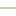

<!doctype html>
<html lang="en">
    <head>
        <meta charset="utf-8">
        <title>Kawasan UNDIP</title>
        <link rel="icon" href= "https://i.ibb.co/sqnfpdM/LOGO-UNDIP-1.png" type=”image/x-icon”/>
        <meta http-equiv="X-UA-Compatible" content="IE=edge">
        <meta name="viewport" content="initial-scale=1,user-scalable=no,maximum-scale=1,width=device-width">
        <meta name="mobile-web-app-capable" content="yes">
        <meta name="apple-mobile-web-app-capable" content="yes">
        <link rel="stylesheet" href="css/leaflet.css">
        <link rel="stylesheet" href="css/qgis2web.css"><link rel="stylesheet" href="css/fontawesome-all.min.css">
        <link rel="stylesheet" href="css/leaflet-measure.css">
        <link rel="stylesheet" href="plugins/betterscale/L.Control.BetterScale.css">
        <link rel="stylesheet" href="plugins/easyprint/easyPrint.css">
        <style>
        html, body, #map {
            width: 100%;
            height: 100%;
            padding: 0;
            margin: 0;
        }
        </style>
        <title></title>
    </head>
    <body>
        <div id="map">
        </div>
        <script src="js/qgis2web_expressions.js"></script>
        <script src="js/leaflet.js"></script>
        <script src="js/leaflet.rotatedMarker.js"></script>
        <script src="js/leaflet.pattern.js"></script>
        <script src="js/leaflet-hash.js"></script>
        <script src="js/Autolinker.min.js"></script>
        <script src="js/rbush.min.js"></script>
        <script src="js/labelgun.min.js"></script>
        <script src="js/labels.js"></script>
        <script src="js/leaflet-measure.js"></script>
        <script src="data/building_2.js"></script>
        <script src="data/building_3.js"></script>
        <script src="plugins/betterscale/L.Control.BetterScale.js"></script>
        <script src="plugins/easyprint/leaflet.easyPrint.js"></script>
        <script>
        var highlightLayer;
        function highlightFeature(e) {
            highlightLayer = e.target;

            if (e.target.feature.geometry.type === 'LineString') {
              highlightLayer.setStyle({
                color: '#ffff00',
              });
            } else {
              highlightLayer.setStyle({
                fillColor: '#ffff00',
                fillOpacity: 1
              });
            }
            highlightLayer.openPopup();
        }
        var map = L.map('map', {
            zoomControl:true, maxZoom:28, minZoom:1
        }).fitBounds([[-7.049396277700319,110.43683647375988],[-7.0482570034062695,110.43926334914312]]);
        var hash = new L.Hash(map);
        map.attributionControl.setPrefix('<a href="https://github.com/tomchadwin/qgis2web" target="_blank">qgis2web</a> &middot; <a href="https://leafletjs.com" title="A JS library for interactive maps">Leaflet</a> &middot; <a href="https://qgis.org">QGIS</a>');
        var autolinker = new Autolinker({truncate: {length: 30, location: 'smart'}});
        var measureControl = new L.Control.Measure({
            position: 'topleft',
            primaryLengthUnit: 'meters',
            secondaryLengthUnit: 'kilometers',
            primaryAreaUnit: 'sqmeters',
            secondaryAreaUnit: 'hectares'
        });
        measureControl.addTo(map);
        document.getElementsByClassName('leaflet-control-measure-toggle')[0]
        .innerHTML = '';
        document.getElementsByClassName('leaflet-control-measure-toggle')[0]
        .className += ' fas fa-ruler';
        var bounds_group = new L.featureGroup([]);
        function setBounds() {
        }
        map.createPane('pane_GoogleSatellite_0');
        map.getPane('pane_GoogleSatellite_0').style.zIndex = 400;
        var layer_GoogleSatellite_0 = L.tileLayer('https://mt1.google.com/vt/lyrs=s&x={x}&y={y}&z={z}', {
            pane: 'pane_GoogleSatellite_0',
            opacity: 1.0,
            attribution: '',
            minZoom: 1,
            maxZoom: 28,
            minNativeZoom: 0,
            maxNativeZoom: 18
        });
        layer_GoogleSatellite_0;
        map.addLayer(layer_GoogleSatellite_0);
        map.createPane('pane_OpenStreetMap_1');
        map.getPane('pane_OpenStreetMap_1').style.zIndex = 401;
        var layer_OpenStreetMap_1 = L.tileLayer('https://tile.openstreetmap.org/{z}/{x}/{y}.png', {
            pane: 'pane_OpenStreetMap_1',
            opacity: 1.0,
            attribution: '',
            minZoom: 1,
            maxZoom: 28,
            minNativeZoom: 0,
            maxNativeZoom: 19
        });
        layer_OpenStreetMap_1;
        map.addLayer(layer_OpenStreetMap_1);
        function pop_building_2(feature, layer) {
            layer.on({
                mouseout: function(e) {
                    for (i in e.target._eventParents) {
                        e.target._eventParents[i].resetStyle(e.target);
                    }
                    if (typeof layer.closePopup == 'function') {
                        layer.closePopup();
                    } else {
                        layer.eachLayer(function(feature){
                            feature.closePopup()
                        });
                    }
                },
                mouseover: highlightFeature,
            });
            var popupContent = '<table>\
                    <tr>\
                        <th scope="row">full_id</th>\
                        <td>' + (feature.properties['full_id'] !== null ? autolinker.link(feature.properties['full_id'].toLocaleString()) : '') + '</td>\
                    </tr>\
                    <tr>\
                        <th scope="row">osm_id</th>\
                        <td>' + (feature.properties['osm_id'] !== null ? autolinker.link(feature.properties['osm_id'].toLocaleString()) : '') + '</td>\
                    </tr>\
                    <tr>\
                        <th scope="row">osm_type</th>\
                        <td>' + (feature.properties['osm_type'] !== null ? autolinker.link(feature.properties['osm_type'].toLocaleString()) : '') + '</td>\
                    </tr>\
                </table>';
            layer.bindPopup(popupContent, {maxHeight: 400});
        }

        function style_building_2_0() {
            return {
                pane: 'pane_building_2',
                opacity: 1,
                color: 'rgba(190,178,151,1.0)',
                dashArray: '',
                lineCap: 'square',
                lineJoin: 'bevel',
                weight: 1.0,
                fillOpacity: 0,
                interactive: true,
            }
        }
        map.createPane('pane_building_2');
        map.getPane('pane_building_2').style.zIndex = 402;
        map.getPane('pane_building_2').style['mix-blend-mode'] = 'normal';
        var layer_building_2 = new L.geoJson(json_building_2, {
            attribution: '',
            interactive: true,
            dataVar: 'json_building_2',
            layerName: 'layer_building_2',
            pane: 'pane_building_2',
            onEachFeature: pop_building_2,
            style: style_building_2_0,
        });
        bounds_group.addLayer(layer_building_2);
        map.addLayer(layer_building_2);
        function pop_building_3(feature, layer) {
            layer.on({
                mouseout: function(e) {
                    for (i in e.target._eventParents) {
                        e.target._eventParents[i].resetStyle(e.target);
                    }
                    if (typeof layer.closePopup == 'function') {
                        layer.closePopup();
                    } else {
                        layer.eachLayer(function(feature){
                            feature.closePopup()
                        });
                    }
                },
                mouseover: highlightFeature,
            });
            var popupContent = '<table>\
                    <tr>\
                        <th scope="row">full_id</th>\
                        <td>' + (feature.properties['full_id'] !== null ? autolinker.link(feature.properties['full_id'].toLocaleString()) : '') + '</td>\
                    </tr>\
                    <tr>\
                        <th scope="row">osm_id</th>\
                        <td>' + (feature.properties['osm_id'] !== null ? autolinker.link(feature.properties['osm_id'].toLocaleString()) : '') + '</td>\
                    </tr>\
                    <tr>\
                        <th scope="row">osm_type</th>\
                        <td>' + (feature.properties['osm_type'] !== null ? autolinker.link(feature.properties['osm_type'].toLocaleString()) : '') + '</td>\
                    </tr>\
                    <tr>\
                        <th scope="row">building</th>\
                        <td>' + (feature.properties['building'] !== null ? autolinker.link(feature.properties['building'].toLocaleString()) : '') + '</td>\
                    </tr>\
                    <tr>\
                        <th scope="row">addr:full</th>\
                        <td>' + (feature.properties['addr:full'] !== null ? autolinker.link(feature.properties['addr:full'].toLocaleString()) : '') + '</td>\
                    </tr>\
                    <tr>\
                        <th scope="row">name</th>\
                        <td>' + (feature.properties['name'] !== null ? autolinker.link(feature.properties['name'].toLocaleString()) : '') + '</td>\
                    </tr>\
                    <tr>\
                        <th scope="row">capacity:persons</th>\
                        <td>' + (feature.properties['capacity:persons'] !== null ? autolinker.link(feature.properties['capacity:persons'].toLocaleString()) : '') + '</td>\
                    </tr>\
                    <tr>\
                        <th scope="row">building:levels</th>\
                        <td>' + (feature.properties['building:levels'] !== null ? autolinker.link(feature.properties['building:levels'].toLocaleString()) : '') + '</td>\
                    </tr>\
                    <tr>\
                        <th scope="row">Gambar</th>\
                        <td>' + (feature.properties['Gambar'] !== null ? autolinker.link(feature.properties['Gambar'].toLocaleString()) : '') + '</td>\
                    </tr>\
                </table>';
            layer.bindPopup(popupContent, {maxHeight: 400});
        }

        function style_building_3_0() {
            return {
                pane: 'pane_building_3',
                opacity: 1,
                color: 'rgba(35,35,35,1.0)',
                dashArray: '',
                lineCap: 'butt',
                lineJoin: 'miter',
                weight: 1.0, 
                fill: true,
                fillOpacity: 1,
                fillColor: 'rgba(231,113,72,1.0)',
                interactive: true,
            }
        }
        map.createPane('pane_building_3');
        map.getPane('pane_building_3').style.zIndex = 403;
        map.getPane('pane_building_3').style['mix-blend-mode'] = 'normal';
        var layer_building_3 = new L.geoJson(json_building_3, {
            attribution: '',
            interactive: true,
            dataVar: 'json_building_3',
            layerName: 'layer_building_3',
            pane: 'pane_building_3',
            onEachFeature: pop_building_3,
            style: style_building_3_0,
        });
        bounds_group.addLayer(layer_building_3);
        map.addLayer(layer_building_3);
        var baseMaps = {};
        L.control.layers(baseMaps,{' building': layer_building_3,' building': layer_building_2,"OpenStreetMap": layer_OpenStreetMap_1,"Google Satellite": layer_GoogleSatellite_0,}).addTo(map);
        setBounds();
        //betterscale

	L.control.betterscale({
	   metric: true,
	   imperial: false
	}).addTo(map);
    //easyPrint

L.easyPrint({
	title: 'My awesome print button',
	position: 'bottomright',
	sizeModes: ['A4Portrait', 'A4Landscape']
}).addTo(map);
        </script>
    </body>
</html>
